VGG的特点
VGG相应的论文《Very Deep Convolutional Networks for Large-Scale Image Recognition》，先看一下VGG的结构图
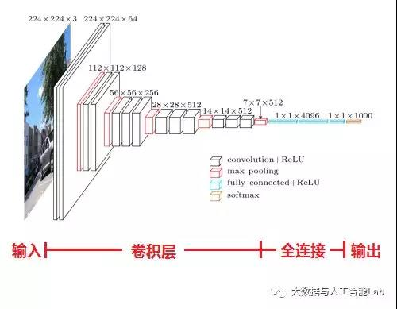
1、结构简洁
VGG由5层卷积层、3层全连接层、softmax输出层构成，层与层之间使用max-pooling（最大化池）分开，所有隐层的激活单元都采用ReLU函数。
2、小卷积核和多卷积子层
VGG使用多个较小卷积核（3x3）的卷积层代替一个卷积核较大的卷积层，一方面可以减少参数，另一方面相当于进行了更多的非线性映射，可以增加网络的拟合/表达能力。
小卷积核是VGG的一个重要特点，虽然VGG是在模仿AlexNet的网络结构，但没有采用AlexNet中比较大的卷积核尺寸（如7x7），而是通过降低卷积核的大小（3x3），增加卷积子层数来达到同样的性能（VGG：从1到4卷积子层，AlexNet：1子层）。
VGG的作者认为两个3x3的卷积堆叠获得的感受野大小，相当一个5x5的卷积；而3个3x3卷积的堆叠获取到的感受野相当于一个7x7的卷积。这样可以增加非线性映射，也能很好地减少参数（例如7x7的参数为49个，而3个3x3的参数为27），如下图所示：
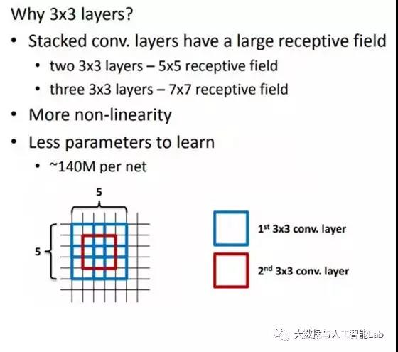
这部分怎么理解呢？笔者百度了一下：
使用更小的卷积核是当前在保证网络精度的情况下，减少参数的趋势之一，在VGG16中，使用了3个3*3卷积核来代替7*7卷积核，使用了2个3*3卷积核来代替5*5卷积核，这样做的主要目的是在保证具有相同感知野的条件下，提升了网络的深度，在一定程度上提升了神经网络的效果。
以下简单地说明一下小卷积(3*3)对于5×5网络感知野相同的替代性。
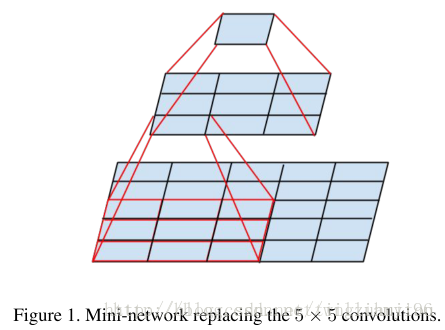
关于3个3×3卷积核对于7× 7 卷积的替代性思考方式同上。
接下来说明以下减少参数的作用。
对于两个3*3卷积核，所用的参数总量为2*(3*3)*channels, 对于5*5卷积核为5*5*channels, 因此可以显著地减少参数的数量。
下面是7*7的用三个3*3卷积核替代的情况
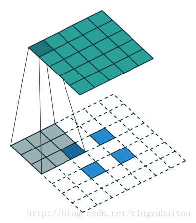
假设输入的图片大小为100*100*3，卷积操作不改变大小（padding=same）。先看用128个7*7*3的核进行卷积操作，需要100*100*7*7*3*128次乘法操作然后我们用3层3*3卷积代替上面的7*7卷积，每层仍取128个核，需要100*100*3*3*3*128*3次乘法操作，约掉相同部分，分别剩下7*7=49和3*3*3=27.显然，用三层3*3代替一层7*7可以减少近一半的计算量。
3、小池化核
相比AlexNet的3x3的池化核，VGG全部采用2x2的池化核。
4、通道数多
VGG网络第一层的通道数为64，后面每层都进行了翻倍，最多到512个通道，通道数的增加，使得更多的信息可以被提取出来。
5、层数更深、特征图更宽
由于卷积核专注于扩大通道数、池化专注于缩小宽和高，使得模型架构上更深更宽的同时，控制了计算量的增加规模。
6、全连接转卷积（测试阶段）
这也是VGG的一个特点，在网络测试阶段将训练阶段的三个全连接替换为三个卷积，使得测试得到的全卷积网络因为没有全连接的限制，因而可以接收任意宽或高为的输入，这在测试阶段很重要。
如本节第一个图所示，输入图像是224x224x3，如果后面三个层都是全连接，那么在测试阶段就只能将测试的图像全部都要缩放大小到224x224x3，才能符合后面全连接层的输入数量要求，这样就不便于测试工作的开展。
而“全连接转卷积”，替换过程如下：
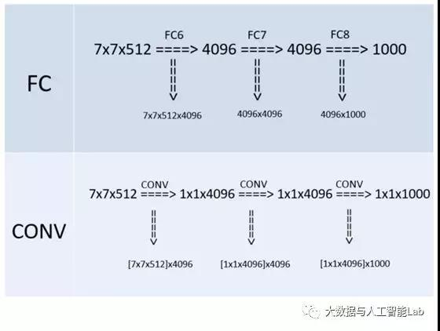 例如7x7x512的层要跟4096个神经元的层做全连接，则替换为对7x7x512的层作通道数为4096、卷积核为1x1的卷积。
这个“全连接转卷积”的思路是VGG作者参考了OverFeat的工作思路，例如下图是OverFeat将全连接换成卷积后，则可以来处理任意分辨率（在整张图）上计算卷积，这就是无需对原图做重新缩放处理的优势。
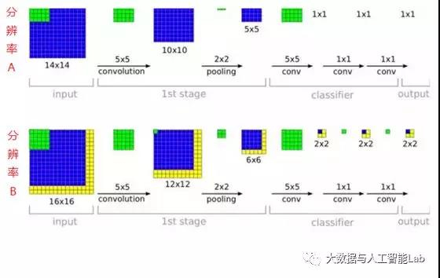
关于全连接转成卷积理解：全连接层的每一个节点都与上一层每个节点连接，是把前一层的输出特征都综合起来，所以该层的权值参数是最多的。例如在VGG16中，第一个全连接层FC1有4096个节点，上一层POOL2是7*7*512 = 25088个节点，则该传输需要4096*25088个权值，需要耗很大的内存。由于可以把全连接层看成卷积层的一个特例，比如VGG16,POOL2到FC1层是全连接的，把pool2的输出节点按向量排列，即有25088个维，每一维大小为1*1，卷积核可以看成num_filters = 4096,channal = 25088,kernel_size = 1,stride=1，no pad。所以其实这部分就是把原先7*7*512的featuremap转成了1*1*25088的featuremap，然后再用4096个核去卷积，就生成了4096个大小为1*1的featuremap，这样就可以把不同大小的图像用于测试了。
测试图片的尺寸不一定要与训练图片的尺寸相同，且不需要裁剪。
测试的时候，首先将全连接层转换到卷积层，第一个全连接层转换到一个7x7的卷积层，后面两个转换到1x1的卷积层，这不仅让全连接网应用到整个未裁剪的整个原始图像上，而且得到一个类别的得分图，其通道数等于类别数，还有一个决定与输入图片尺寸的可变空间分辨率。为了获得固定尺寸的图片的得分图，运用原始图片的softmax的后验概率以及其水平翻转的平均来获得。
VGG的网络结构
下图是来自论文《Very Deep Convolutional Networks for Large-Scale Image Recognition》（基于甚深层卷积网络的大规模图像识别）的VGG网络结构，正是在这篇论文中提出了VGG，如下图：
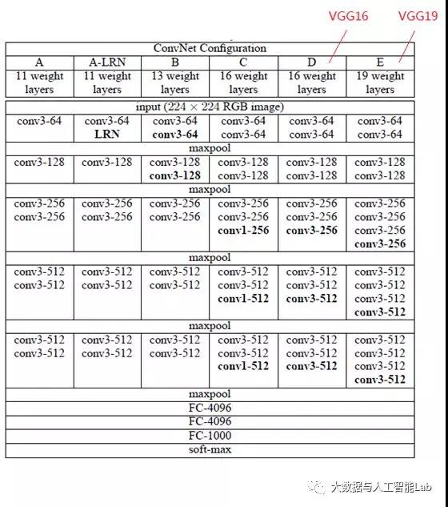
在这篇论文中分别使用了A、A-LRN、B、C、D、E这6种网络结构进行测试，这6种网络结构相似，都是由5层卷积层、3层全连接层组成，其中区别在于每个卷积层的子层数量不同，从A至E依次增加（子层数量从1到4），总的网络深度从11层到19层（添加的层以粗体显示），表格中的卷积层参数表示为“conv〈感受野大小〉-通道数〉”，例如con3-128，表示使用3x3的卷积核，通道数为128。为了简洁起见，在表格中不显示ReLU激活功能。
其中，网络结构D就是著名的VGG16，网络结构E就是著名的VGG19。
以网络结构D（VGG16）为例，介绍其处理过程如下，请对比上面的表格和下方这张图，留意图中的数字变化，有助于理解VGG16的处理过程：
1、输入224x224x3的图片，经64个3x3的卷积核作两次卷积+ReLU，卷积后的尺寸变为224x224x64
2、作max pooling（最大化池化），池化单元尺寸为2x2（效果为图像尺寸减半），池化后的尺寸变为112x112x64
3、经128个3x3的卷积核作两次卷积+ReLU，尺寸变为112x112x128
4、作2x2的max pooling池化，尺寸变为56x56x128
5、经256个3x3的卷积核作三次卷积+ReLU，尺寸变为56x56x256
6、作2x2的max pooling池化，尺寸变为28x28x256
7、经512个3x3的卷积核作三次卷积+ReLU，尺寸变为28x28x512
8、作2x2的max pooling池化，尺寸变为14x14x512
9、经512个3x3的卷积核作三次卷积+ReLU，尺寸变为14x14x512
10、作2x2的max pooling池化，尺寸变为7x7x512
11、与两层1x1x4096，一层1x1x1000进行全连接+ReLU（共三层）
12、通过softmax输出1000个预测结果
不知道大家有没有疑惑，就是每次卷积完了以后，featuremap的大小和卷积之前的大小是相同的。这里就涉及到卷积的两种padding方式，大家可以参考这个链接，讲的很清楚https://blog.csdn.net/wuzqchom/article/details/74785643 TensorFlow中CNN的两种padding方式“SAME”和“VALID”
以上就是VGG16（网络结构D）各层的处理过程，A、A-LRN、B、C、E其它网络结构的处理过程也是类似，执行过程如下（以VGG16为例）：
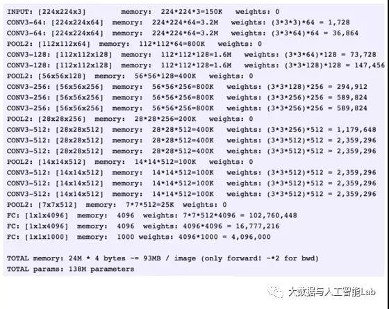
从上面的过程可以看出VGG网络结构还是挺简洁的，都是由小卷积核、小池化核、ReLU组合而成。其简化图如下（以VGG16为例）：
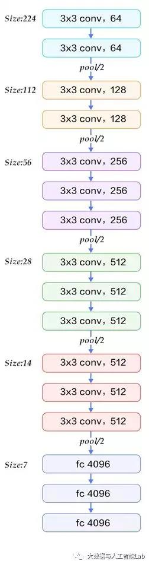
A、A-LRN、B、C、D、E这6种网络结构的深度虽然从11层增加至19层，但参数量变化不大，这是由于基本上都是采用了小卷积核（3x3，只有9个参数），这6种结构的参数数量（百万级）并未发生太大变化，这是因为在网络中，参数主要集中在全连接层。
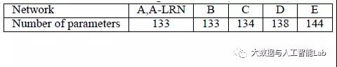
经作者对A、A-LRN、B、C、D、E这6种网络结构进行单尺度的评估，错误率结果如下：
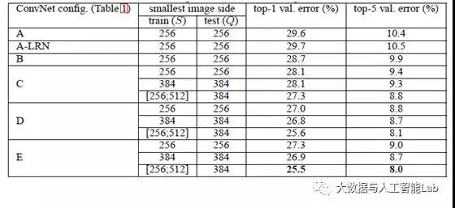
这里还要对top1错误率和top5错误率稍做一下解释：top1就是你预测的label取最后概率向量里面最大的那一个作为预测结果，你的预测结果中概率最大的那个类必须是正确类别才算预测正确。而top5就是最后概率向量最大的前五名中出现了正确概率即为预测正确。
从上表可以看出：
1、LRN层无性能增益（A-LRN）
VGG作者通过网络A-LRN发现，AlexNet曾经用到的LRN层（local response normalization，局部响应归一化）并没有带来性能的提升，因此在其它组的网络中均没再出现LRN层。
2、随着深度增加，分类性能逐渐提高（A、B、C、D、E）
从11层的A到19层的E，网络深度增加对top1和top5的错误率下降很明显。
3、多个小卷积核比单个大卷积核性能好（B）
VGG作者做了实验用B和自己一个不在实验组里的较浅网络比较，较浅网络用conv5x5来代替B的两个conv3x3，结果显示多个小卷积核比单个大卷积核效果要好。
小结：
1、通过增加深度能有效地提升性能；
2、最佳模型：VGG16，从头到尾只有3x3卷积与2x2池化，简洁优美；
3、卷积可代替全连接，可适应各种尺寸的图片
补充一点Alex的CNN训练的时候的细节，和本次的VGG网络的理解无关，纯粹是为了记个小笔记。需要注意的是，该模型采用了2-GPU并行结构，即第1、2、4、5卷积层都是将模型参数分为2部分进行训练的。在这里，更进一步，并行结构分为数据并行与模型并行。数据并行是指在不同的GPU上，模型结构相同，但将训练数据进行切分，分别训练得到不同的模型，然后再将模型进行融合。而模型并行则是，将若干层的模型参数进行切分，不同的GPU上使用相同的数据进行训练，得到的结果直接连接作为下一层的输入。
首先需要理解的是改fc层为conv层实际上的计算方式没有发生任何变化。但是其结果全卷积网络可以接收任意大小的图片输入，得到一个score map，对其做一个average就可以得到最终结果(one-hot label)。
之所以需要这样设计，因为他们train与test的图片大小是不一样的。
卷积层和全连接层的唯一区别在于卷积层的神经元对输入是局部连接的,并且同一个通道(channel)内不同神经元共享权值(weights). 卷积层和全连接层都是进行了一个点乘操作, 它们的函数形式相同. 因此卷积层可以转化为对应的全连接层, 全连接层也可以转化为对应的卷积层.
比如VGGNet[1]中, 第一个全连接层的输入是7*7*512, 输出是4096. 这可以用一个卷积核大小7*7, 步长(stride)为1, 没有填补(padding), 输出通道数4096的卷积层等效表示, 其输出为1*1*4096, 和全连接层等价. 后续的全连接层可以用1x1卷积等效替代.
简而言之, 全连接层转化为卷积层的规则是: 将卷积核大小设置为输入的空间大小.这样做的好处在于卷 积层对输入大小没有限制, 因此可以高效地对测试图像做滑动窗式的预测.
比如训练时对224*224大小的图像得到7*7*512的特征, 而对于384*384大小的测试图像, 将得到12*12*512的特征, 通过后面3个从全连接层等效过来的卷积层, 输出大小是6*6*1000, 这表示了测试图像在36个空间位置上的各类分数向量. 和分别对测试图像的36个位置使用原始的CNN相比, 由于等效的CNN共享了大量计算, 这种方案十分高效而又达到了相同目的.全连接层和卷积层的等效表示最早是由[2]提出. [2]将卷积层中的线性核改成由一系列的全连接层组成的小神经网络, 用于在每个卷积层提取更复杂的特征. 在实现时, NIN是由一个传统卷积层后面加一系列1*1卷积得到的。
[3]论证了用卷积层替代全连接层的好处, 下图黄色部分是多出来的计算量, 和将一个网络运用在测试图像的多个位置相比, 这种方法十分高效.
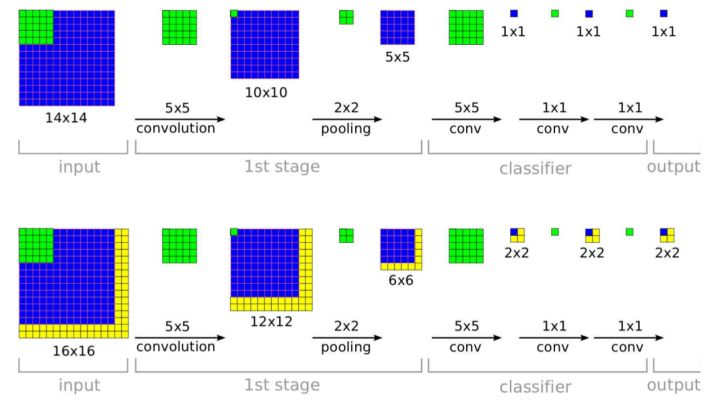
由于卷积层可以处理任意大小输入, 非常适合检测, 分割等任务, 比如[4]提出全卷积网络用于进行语义分割.
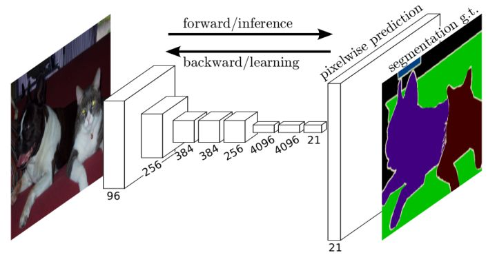